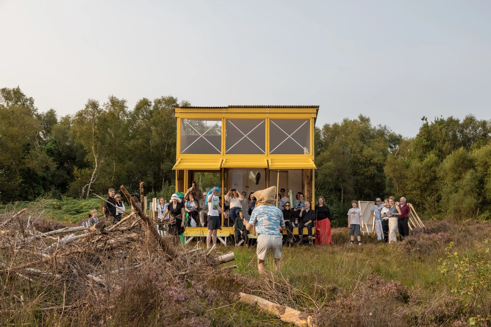
I am very pleased to introduce this 2025 Impact Report, which reflects the real and growing impact of Creative Ireland in people's lives across the country. At its heart, this programme is about people, and about giving individuals and communities the opportunity to express themselves, connect with one another, and shape the places they live in through creativity.
In 2025 alone, €13 million was invested to support over 1,500 creative projects, with more than 17,000 creative practitioners involved. Behind those figures are thousands of individual stories of communities coming together, of young people finding their voice, and of creativity making a meaningful difference in everyday life.
Over the past year, I have seen first-hand the impact of this work in communities, in schools, and in initiatives that support wellbeing and inclusion.
It is especially encouraging to see so many creative practitioners and local partners coming together to deliver projects that are not only imaginative but deeply rooted in the needs and strengths of their communities.
Creative Ireland continues to show how creativity can play a practical role in public policy, helping us respond to challenges in new ways, strengthen connections between people, and build a more confident and inclusive society. That collaborative spirit, across government and at local level, is something I greatly value and will continue to support.
This report highlights just some of that work, and I hope it gives you a sense of the energy, ambition and care that underpins the programme right across the country.
Is mise
An t-Aire Pádraig Ó Donnabháin
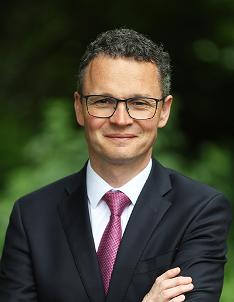
Patrick O'Donovan T.D.
Minister for Culture, Communications and Sport
The mission of Creative Ireland is to find innovative ways to empower us to tap into and develop our innate creative ability through participation in creative and cultural activity.
Creative Ireland is a whole of government culture and wellbeing programme, led by the Department of Culture, Communications and Sport (DCCS). The programme aims to inspire and transform people, places and communities through participation in creative and cultural activity, with the vision that every person in Ireland has access to creative opportunities to realise their creative potential. First established in 2017, the programme is now in its second phase, which is due to complete at the end of 2027.
The mission of Creative Ireland is to find innovative ways to empower us to tap into and develop our innate creative ability through participation in creative and cultural activity.
By focusing on participation as the key to unlocking creativity and by ensuring projects are, as far as possible, participant led, Creative Ireland acts as a catalyst for a wide and diverse range of activity on the ground across Ireland. This work encompasses visual arts, design, music, dance, craft, literature, multidisciplinary and public art, theatre, heritage, traditional arts, creative writing, film, circus and street art, storytelling, Irish language, digital technologies, AR/VR, animation and architecture. It involves people at every stage of life, with an emphasis on engaging seldom heard and marginalised groups.
A significant part of Creative Ireland's work is targeted investment through grant funding – providing €13 million to support over 1,500 projects in 2025. The programme also builds capacity among partner organisations through training and networking, undertakes research and evaluation, and works to embed creativity in government policy on cross cutting issues such as, social inclusion, education, health, wellbeing, climate action and the future economy.
This Impact Report highlights key achievements and impact delivered throughout 2025.

Creativity is about using our imaginations to express ourselves, find purpose and identity, take risks, strengthen resilience, make new beginnings and even spark a sense of wonder, fun and joy, enabling us to add meaningful value to our lives and communities.
Creativity is an innate human ability, and to be creative is a fundamental part of being human. It is a combination of natural human talent and learned skill, that gives each of us the ability to express ourselves through the discovery and expression of new and original ideas and the design of innovative solutions to problems. In this way having opportunities to be creative is closely linked to how we develop and realise our potential. At its heart, creativity is about using our imaginations to express ourselves, find purpose and identity, take risks, strengthen resilience, make new beginnings and even spark a sense of wonder, fun and joy, enabling us to add meaningful value to our lives and communities.
Creativity is now widely recognised as a critical transversal skill. There is clear evidence that participation in creative and cultural activity is a key indicator for improved wellbeing, better social connection and better health outcomes. It is also the essential prerequisite for innovation across our economy and public sector, as outlined in the Principles and Action Plan for Designing Better Public Services.
At European level, the European Commission's Culture Compass for Europe similarly positions culture as key driver of innovation and societal development.
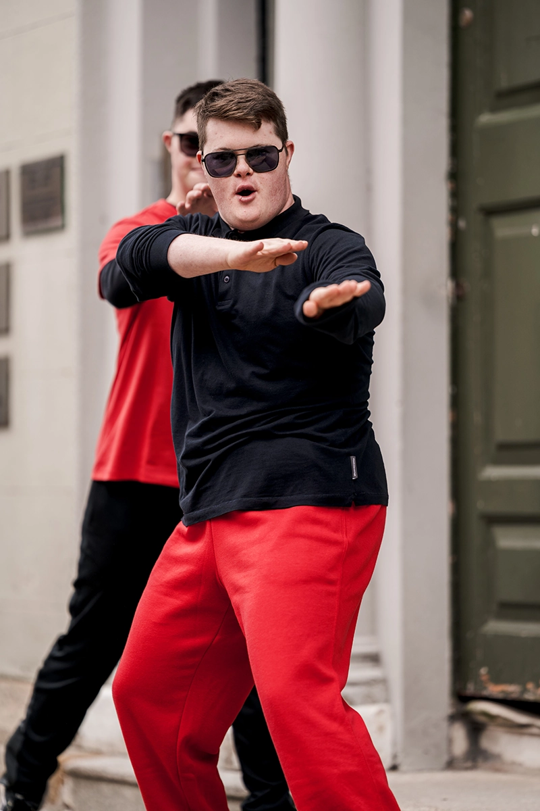
Traces Dance Ensemble, Glór Dance Project
The five strategic pillars of Creative Ireland
| Creative Communities | Supporting locally led culture and creativity strategies through local authorities. |
| Creative Youth | Embedding creativity into the heart of children and young peoples' lives. |
| Creative Health and Wellbeing | Advancing creative approaches to health and wellbeing. |
| Creative Climate Action and Sustainability | Mobilising creativity to address climate and sustainability challenges. |
| Creative Industries | Strengthening Ireland's creative industries. |
The objectives of the pillars are set out in a number of strategy documents including The Creative Youth Plan 2023–2027 - an all-of-government strategy aimed at providing children and young people with increased opportunities for creative engagement. The work of the Health and Wellbeing pillar is focused by the Strategic Action Plan for Arts and Health, while Creative Industries leads on the implementation of the Digital Creative Industries Roadmap. At local level, local authority Culture and Creativity Strategies share common priorities around social cohesion, wellbeing and investment in communities.
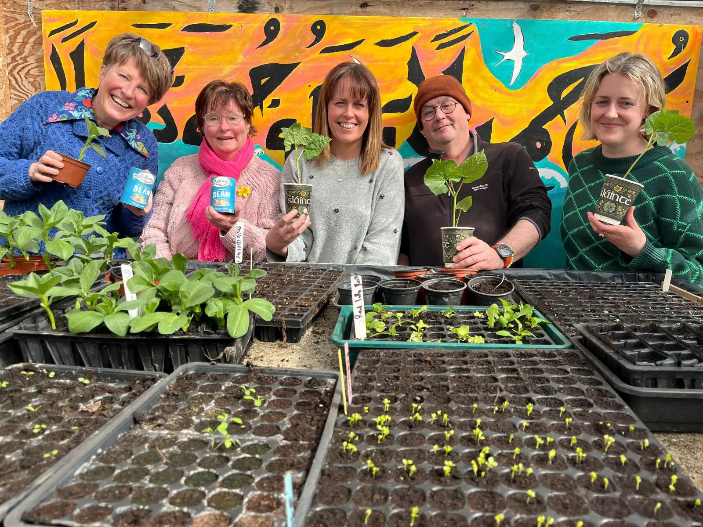
Brilliant Ballybunion Bean Festival
Through a collaborative delivery model, working in partnership with government departments, local authorities, state agencies, cultural organisations, and community partners to fund and deliver projects on the ground.
Creative Ireland operates through a collaborative delivery model, working in partnership with government departments, local authorities, state agencies, cultural organisations, and community partners to fund and deliver projects on the ground. Since the second phase of Creative Ireland began in 2023, Creative Ireland has invested €39.9 million to advance its ambition of inspiring and transforming people, places and communities through creative and cultural participation. In 2025, €13 million was invested in 1,548 creative projects.
The Government's Shared Island initiative aims to harness the full potential of the Good Friday Agreement to enhance cooperation, connection and mutual understanding on the island and engage with all communities and traditions to build consensus around a shared future.
Since 2023, Creative Ireland's Shared Island initiative has invested €6 million across the island of Ireland, with the goal of using creativity to foster person-to-person and community-to-community relationships which can contribute to a new vision of a shared island.
In November 2025, Creative Ireland celebrated the work of 47 Shared Island projects, at a conference in Croke Park, Dublin. Attended by Taoiseach Micheál Martin, Minister for Culture, Communications and Sport, Patrick O'Donovan and over 350 invited guests, the conference featured musical performances, panel discussions and exhibitions exploring experiences and stories from the initiative.
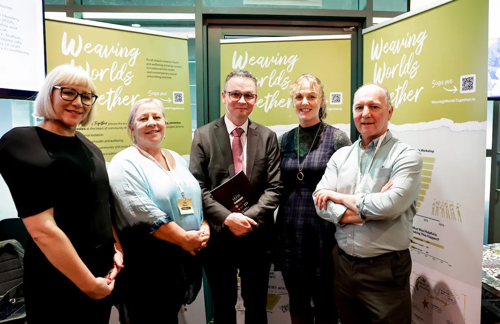
Weaving Worlds Together, Kerry County Council
As a cross-government initiative, Creative Ireland acts as a catalyst for system change by strategically integrating culture and creativity into the policy frameworks of our partner government departments, local authorities and state agencies. This approach aligns with and supports key national strategies, including the Healthy Ireland Framework, Young Ireland, the Child Poverty and Well-being Programme, the National Well-being Framework and the National Climate Action Plan, enabling innovative responses to complex social, economic and environmental challenges.
A core focus in 2025 was embedding creativity within policy frameworks at national and local level.
Through local authority Culture and Creativity Strategies, Creative Ireland continued to strengthen its key partnership with the local government and the County and City Management Association. Creative Ireland funded projects continue to align with and enable Development Plans and Local Economic and Community Plans, including Age Friendly Ireland, Healthy Communities, Community Safety Partnerships and Town Centre First.
In 2025, Creative Ireland supported targeted research, monitoring and evaluation across youth, climate action, health and ageing, and communities, including in a Shared Island context. This work strengthens accountability, informs future investment decisions, supports consistent evaluation approaches across partners, and contributes to wider policy understanding of the role creativity plays in addressing shared societal challenges.
A 2025 interim report presents the initial findings from a programme-level evaluation of the Creative Ireland Shared Island initiative. This evaluation covers 22 projects and offers early insights into the impact of these collaborative creative initiatives. The final report in 2026 will include detailed findings when all projects conclude and evaluations are complete.
Other evaluation work includes the conclusion of an in-depth five-year evaluation of the impact of Creative Climate Action funding by University College Cork; the launch of a new two-year research partnership with the ESRI for Creative Youth which began in 2025; and the renewal of research with The Irish Longitudinal Study on Ageing (TILDA) around cultural participation and aging for a further two years.
Creative Ireland operates through a collaborative delivery model, working in partnership with government departments, local authorities, state agencies, cultural organisations, and community partners to fund and deliver projects on the ground. Critical to the Creative Ireland model is building capacity among communities and practitioners to ensure funding is used effectively and sustainably. In 2025 Creative Ireland delivered 26 networking and capacity building events, to strengthen capability across its strategic pillars.
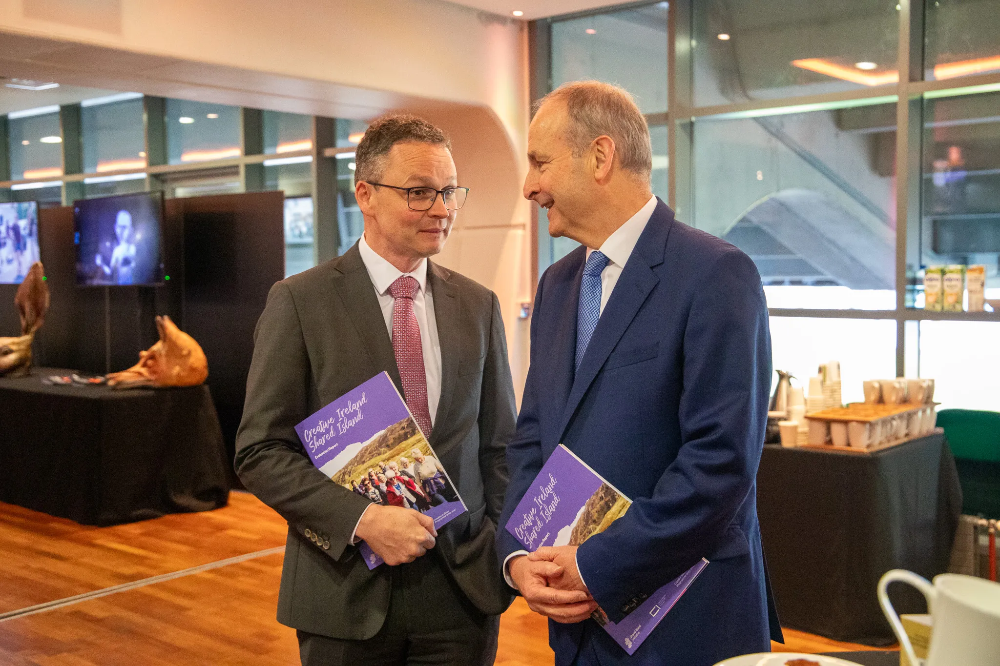
Minister Patrick O'Donovan and Taoiseach Micheál Martin, Shared Island conference
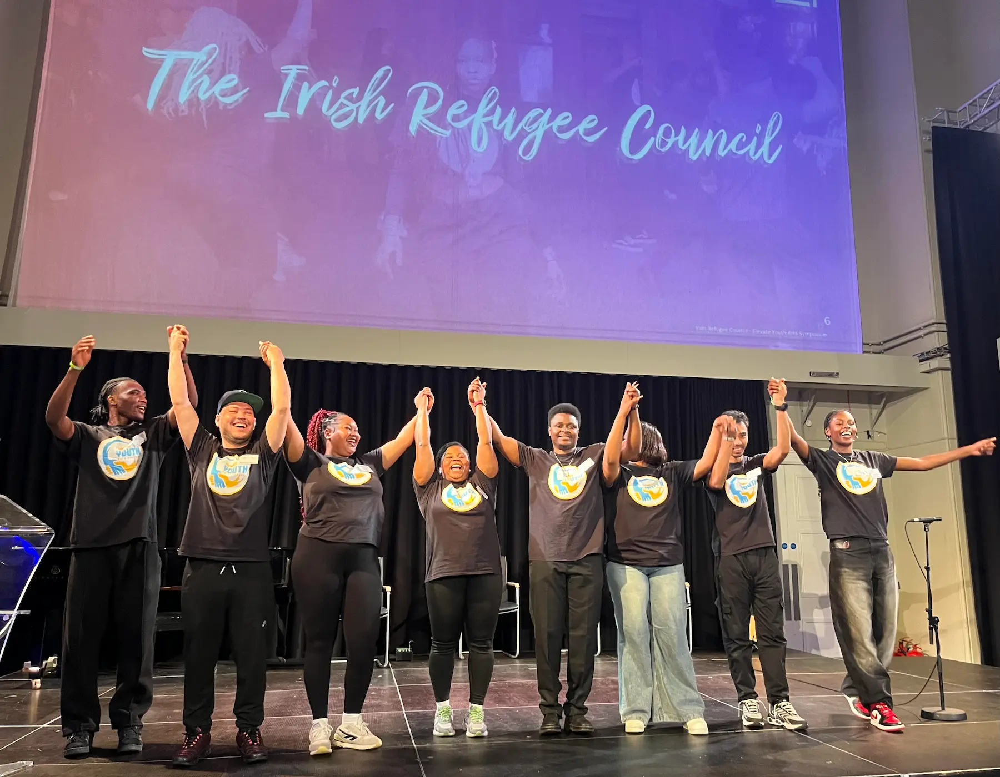
Irish Refugee Council, Creative Youth Nurture Fund conference
Cruinniú na nÓg, a key commitment in the Creative Youth Plan, delivered over 1,100 events across Ireland, including on a Shared Island basis, engaging 2,174 creative practitioners.
1,584 creative projects supported through programme funding.
€13 million invested in 2025 to advance creative activity and participation nationwide.
Investment distributed across the programme's five pillars: Communities, Youth, Health and Wellbeing, Climate Action and Sustainability and Creative Industries.
26 networking and capacity building events delivered across five strategic pillars including:
Creative Communities is a policy and implementation partnership between DCCS and DHLGH. It's a five-year funding commitment with local authorities who have significant autonomy in how investment is used locally. This flexibility allows for imaginative, place-based and long-term approaches to creative development.
Creative Communities provides annual funding to local authorities to place communities at the centre of how creative projects are designed and delivered, responding to issues that matter to local communities. An in-depth evaluation of Creative Communities due to be published in Q2 2026 is showing that 87% of projects take place in areas with low access to creative and cultural activity, providing opportunities and a voice for people and communities who might otherwise be excluded.
Capacity in local authorities to facilitate community participation in creative and cultural activity has been significantly strengthened through the appointment of Creative Communities Engagement Officers (CCEOs). These roles are co-funded by Creative Ireland with local authorities, reflecting the value placed by local authorities on community-based engagement. Creative Communities Engagement Officers ensure local needs are reflected in programme design and delivery, while supporting effective collaboration across multidisciplinary Culture and Creativity Teams.
Implementation is supported by a diverse Culture and Creativity Team established in each local authority, led by a Director of Service and including stakeholders from arts, heritage, libraries, community development, climate, biodiversity, tourism, housing, Irish Language, Healthy Ireland, Age Friendly and Local Enterprise Offices. These teams provide an unprecedented forum for cross-sectoral collaboration and are central to how Creative Communities responds to local needs and interests.
An evaluation of the Creative Communities will be published in Q2 2026. Headline findings include:
In 2025, the first Creative Communities on a Shared Island initiative (2023-2025), supported by a €1.5 million investment, concluded, with a series of large-scale projects delivered through local authorities, cultural and creative organisations, and community groups across the island. These included Birds Of A Feather and Dance Connects in Rural Borders alongside locally rooted initiatives such as The Ties That Bind, Farm Walks, Building Shared Creative Communities and Sharing Songs – Unforgettable Voices.
Evaluations show that these projects fostered lasting creative and social connections, with participants highlighting the importance of safe, accessible and peaceful spaces in enabling meaningful engagement, shared understanding and ongoing collaboration.
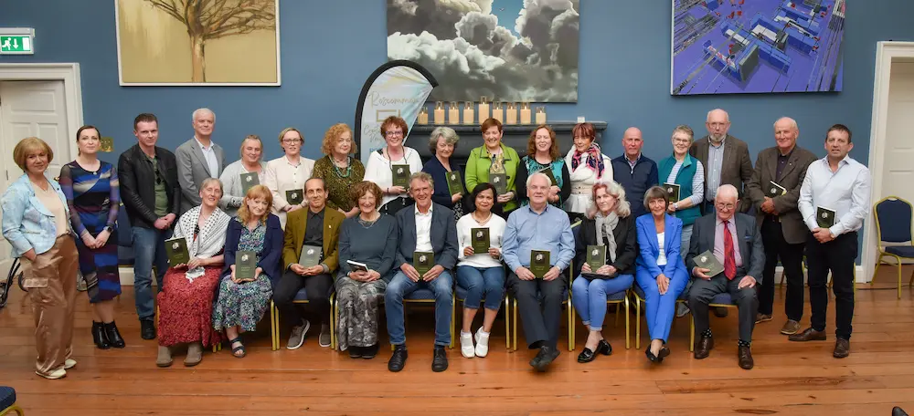
Roscommon Anthology, Roscommon County Council
In 2025 funding of €7.8 million supported 1,495 projects, and an additional 1,184 Cruinniú na nÓg events, held on Saturday 7 June. This investment supported 17,424 creative practitioners across the island of Ireland.
In 2025, DCCS funding of €2.4 million (including Shared Island) supported 30 Creative Youth initiatives, including eight Local Creative Youth Partnerships, nine Nurture Fund projects and six Shared Island projects.
The Creative Youth Plan 2023–2027 is delivered through a collaborative framework that places creativity at the heart of children and young people's lives, nurturing this essential skill throughout their journey to adulthood.
2025 was a year of reflection on progress achieved to date under the Plan. This was presented to government in May, followed by the publication of an Interim Report 2023–2025 in July. This highlighted the success of the Plan since 2023 and outlined the strategic focus for its remaining two years. A searchable map of all school projects to date was launched by the Department of Education and Youth and can be viewed here.
Creative Youth continued to expand its reach to children and young people who are often seldom heard. In partnership with DCDE and DEY an eighth Local Creative Youth Partnership was established within the Tipperary Education and Training Board, expanding both inclusive and targeted opportunities for creative participation in community settings.
The Creative Youth Nurture Fund pilot concluded in 2025, culminating in a celebratory showcase event in May, followed by the publication of all nine supported projects. These diverse projects engaged young people from the Travelling Community, from the refugee community and those seeking protection, young people with disabilities, in youth detention, in or transitioning from the care system, and those attending youth mental health services. Evaluation of the pilot demonstrated strong positive outcomes, including increased self-confidence and self-expression, the development of transferable skills, enhanced social connection and belonging, and positive shifts in attitudes and perceptions.
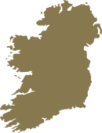
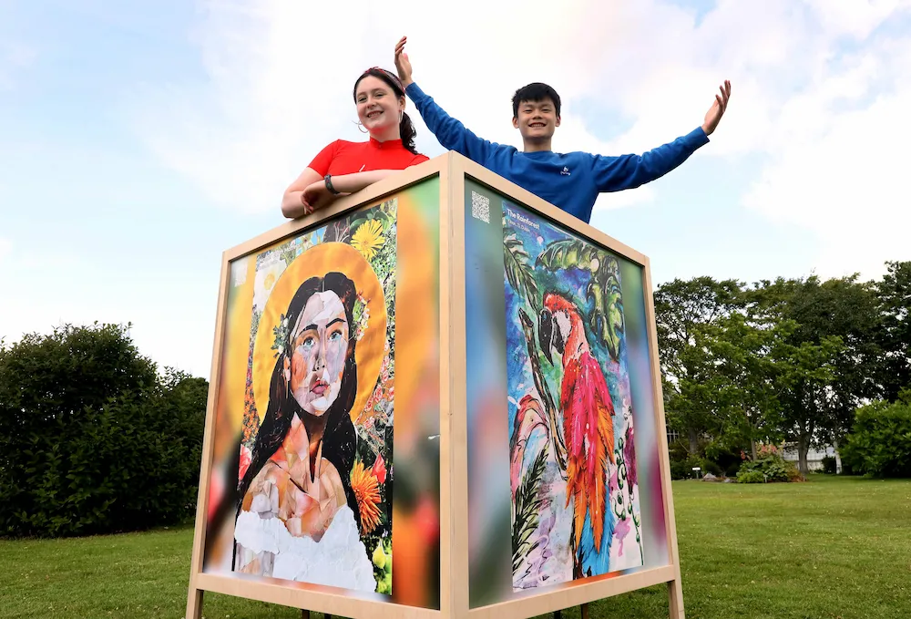
Cruinniú na nÓg, This is Art! Island
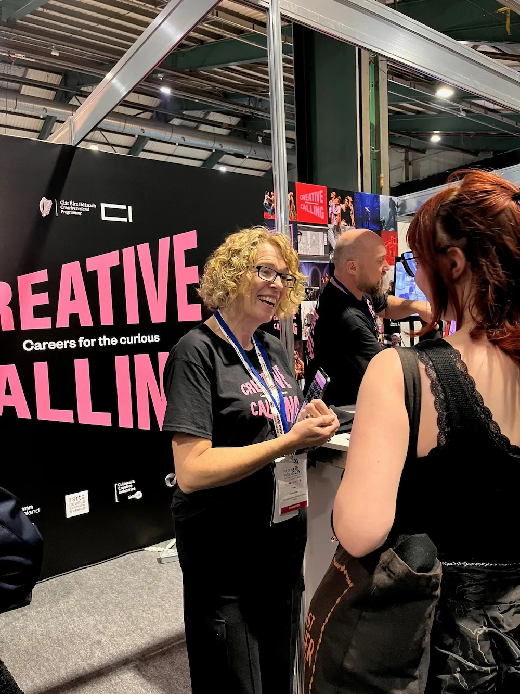
Creative Careers at the Higher Options and WorldSkills event, RDS
Through the Shared Island initiative, €900,000 supported six Creative Youth on a Shared Island projects during 2024–2025. The projects enabled meaningful interactions between young people across the Island through song writing, storytelling, theatre, parade, creative writing and dance. Representatives from all six projects participated in our Shared Island Conference in November 2025.
In 2025, Creative Youth also commenced new cross-government initiatives to engage young people. The Creative Careers pilot was officially launched at the Higher Options and World Skills events in the RDS in September, designed to raise awareness among 16–18 year-olds of the range of career possibilities in the cultural and creative industries. Coordinated by Creative Ireland, Creative Careers brought together agencies under the aegis of the Department of Culture including The Arts Council, Screen Ireland and Coimisiún na Meán.
In addition, Creative Youth, led by DFHERIS and key stakeholders in further and higher education is developing a Creative Campus concept within tertiary education settings. The initiative aims to "identify aims, principles and features of a creative campus, in collaboration with further and higher education institutions, the creative sectors and communities". Engagement with these stakeholders was supported by a comprehensive survey and consultation event hosted in TU Dublin in November 2025.
A key objective for the next phase of delivery for Creative Youth is the continued strengthening of the evidence base through research. In November, Creative Ireland, in partnership with DCDE and DEY, and the ESRI, established a joint programme of research on children and young people's engagement in creative and cultural activities. This research programme will run from 2025–2027.
In 2025, €1.35 million in funding was invested in Creative Health and Wellbeing.
There is growing national and international evidence that participation in creative and cultural activity has a positive impact on wellbeing, a field of practice known as Arts and Health. The Health and Wellbeing pillar of Creative Ireland works in partnership with the DoH, the HSE and the Arts Council, to realise the vision set out in our first Strategic Action Plan for Creative Arts and Health that:
'People living in Ireland have access to creative and cultural activity as part of a holistic health journey throughout the life course, supporting better health and wellbeing outcomes and enriching the creative and artistic landscape'
The plan, published in June 2025, has driven investment of €1.55 million of which €1.35m was funded by Creative Ireland who also act as the secretariat for the National Creative Arts and Health Working group.
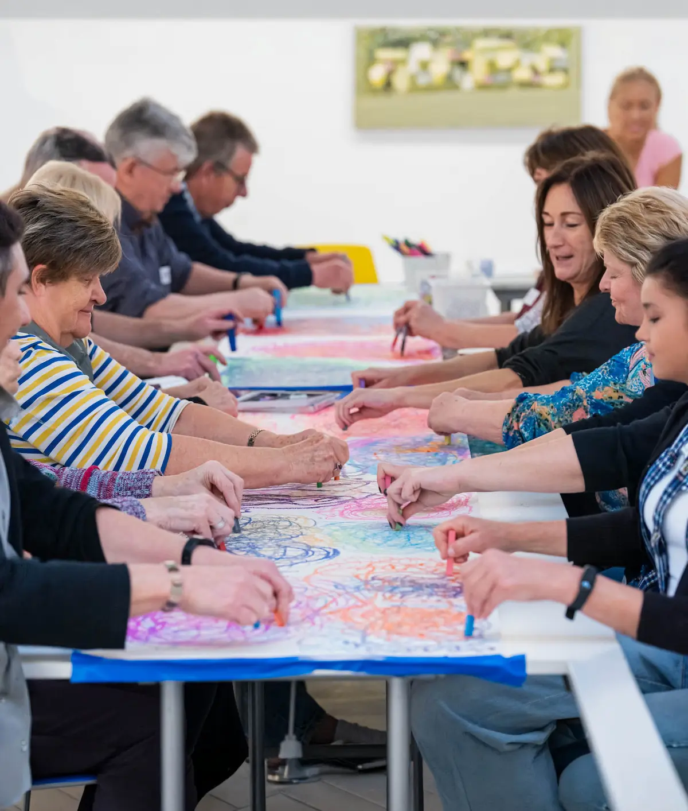
Take 5, Donegal County Council
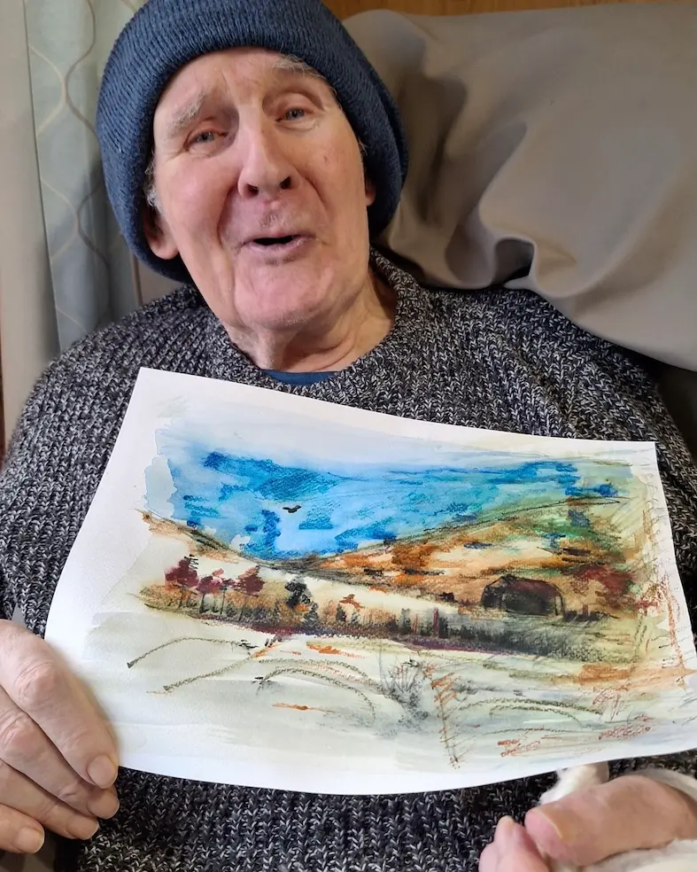
Did I Ever Tell You. Kildare, Offaly and Westmeath County Councils
Key outputs for 2025 under this plan are:
a. A first Strategic Action Plan for Creative Arts & Health was published in 2025 with work already underway on the next multi-annual plan.
b. Ireland worked closely with other Member States, the European Commission and the World Health organisation on the EU report Culture & Health – Time to Act.
Creative Ireland provided funding of €111,000 to the Trinity Longitudinal Study on Ageing (TILDA) to continue its research on the benefits of participation in creative and cultural activity across the life course.
Creative Ireland is funding the Clinical Creativity collaboration between UCD Medical School and the National College of Art & Design to develop training in arts and health for medical students.
a. The next iteration of the Traveller Wellbeing Through Creativity Scheme was developed in close collaboration with the Traveller community by the HSE and The Arts Council, with the objective of expanding this initiative and ensuring sustainable delivery by embedding it in the HSE and making to truly Traveller led.
b. The Arts Council delivered a research report on the role of Arts and Health in HSE-funded Social Prescribing. The report explores potential models to sustainably integrate and scale arts and health within the All-Ireland Social Prescribing Network. This work will be a key focus for the National Creative Arts and Health Working group in 2026.
c. Jointly funded by Creative Ireland and the Department of Health, The Live Music in Residential Healthcare Settings scheme continued to deliver meaningful, measurable impact for older people, with live performances facilitated in 79 nursing homes by Health and Wellbeing teams in thirteen local authorities. Evidence of the impact from this initiative informed the decision to continue the programme in 2026, confirming its value as an evidence-based model for enhancing care through creativity.
d. Creative Ireland provided €1m (including €0.25m in Shared Island funding) for a second year of support for 15 projects designed and delivered through partnerships between Creative Ireland and Healthy Ireland teams in local authorities, working with their local HSE teams. An independent evaluation, to be published in Q1 2026, provides robust evidence of the positive health and wellbeing outcomes of this scheme.
In 2025, the Climate Action Fund delivered 19 Ignite Projects, investing a total of €2.8 million.
In 2025 Creative Ireland continued to deliver the three-year, €6.3 million Creative Climate Action Fund II: Agents of Change (2023-2025), supporting creative practitioners and communities to address sustainability, biodiversity and behavioural change around climate action through creative engagement.
Phase II of the Fund supported 23 Spark projects (up to €50,000) and 16 Ignite projects (up to €250,000), in partnership with DCEE. In addition, three Ignite projects were supported through the Shared Island initiative. This represents a total investment of €8.5 million in 57 Creative Climate Action projects since the fund's inception in 2021.
23 Spark projects concluded in 2024 and 19 Ignite projects concluded in 2025. These projects were delivered through a range of stakeholders including local authorities, universities, climate organisations, creative organisations, and local communities, bringing together a vibrant cross-section of civil society to deliver thought-provoking and engaging projects.
Capacity building remained a core element of delivery in 2025. Creative Ireland supported funded projects through structured development supports, strengthening skills in climate policy literacy, creative facilitation, project design, and evaluation while fostering cross-sectoral learning and collaboration with partners including DCEE and the Environmental Protection Agency. The SEAI inaugurated a new award for 'warming up the boardroom', in partnership with Creative Ireland.
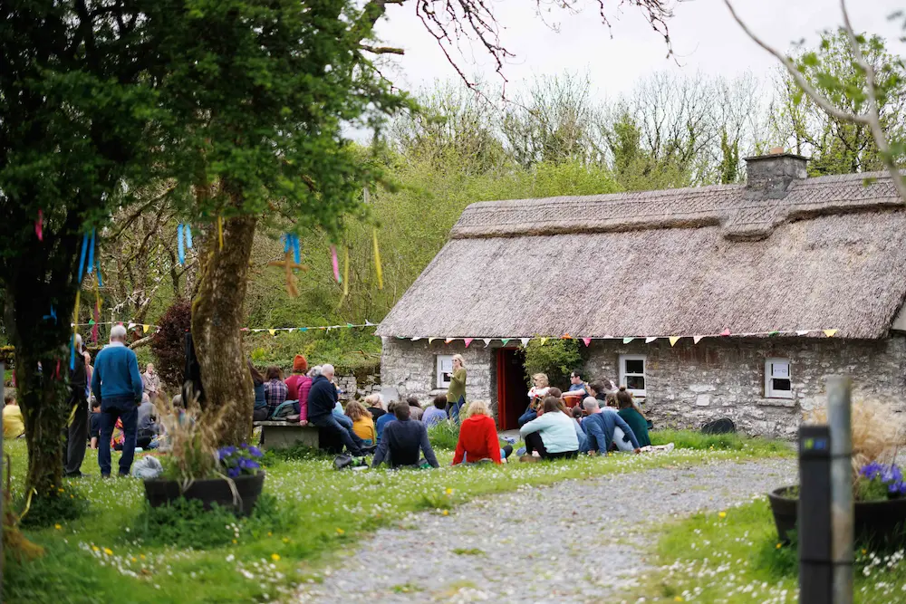
Turas, Burrenbeo Trust
The ability to engage, inspire and mobilise communities positions culture and creativity as pivotal agents in the transition towards a more sustainable and inclusive future.
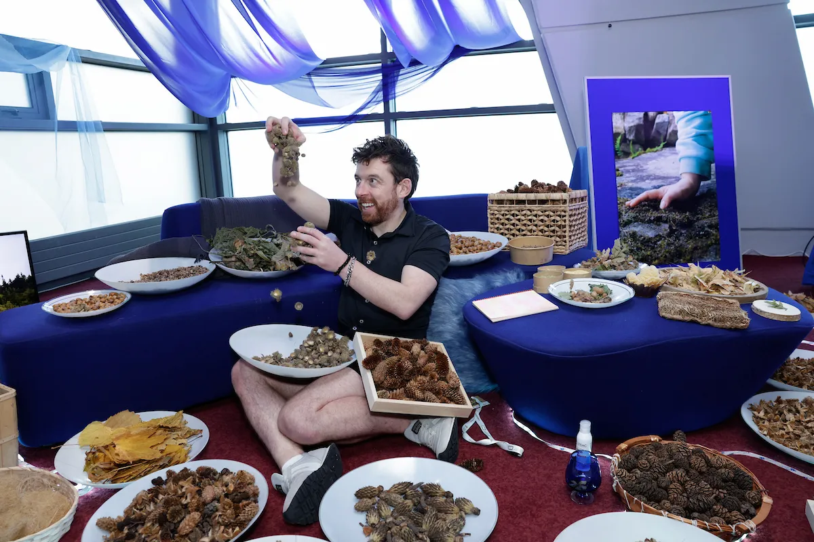
Divergently Together, DCU
An independent research partnership with UCC MaREI (SFI Research Centre for Energy, Climate and Marine), continued in 2025. The interim report, Creative Climate Change II – Report Year One, published in March 2025, presents early findings on the role of arts and creative practice in engaging communities with the climate crisis. In addition, all Spark project Reports were completed in 2025 with Ignite project evaluations to follow in 2026. The published reports are available here and are a rich source of inspiration and learning.
Ireland worked closely with other Member States and the European Commission on the EU Creative Shifts: empowering culture for sustainable living report which was published in December 2025. The report highlights how the Creative Climate Action Fund is a model of good practice in Europe, demonstrating how the cultural and creative sectors have the 'ability to engage, inspire and mobilise communities positions them as pivotal agents in the transition towards a more sustainable and inclusive future'.
Through the Shared Island initiative, Creative Ireland invested €1.06 million to support three Creative Climate Action projects delivering cross-border and shared learning approaches to climate engagement, empowering citizens to take meaningful action through creative and cultural practice. These projects highlighted how the themes of: shared waterways and shorelines; supporting company boardrooms north and south to tackle the knotty problem of climate change, and supporting neurodiverse communities to engage with and support the climate agenda are truly all-island problems and tackling them together will ensure better outcomes.
In 2025, funding of €463k was provided to Creative Industries.
The Digital Creative Industries Roadmap 2024–26 focuses on design-intensive industries with strong potential to drive innovation, competitiveness and future job creation, including commercial design, digital games, immersive technologies (AR/VR) and commercial creative agencies. Through the Digital Creative Industries Forum government and industry is working together to leverage the clear potential of these sectors to support sustainable and resilient employment, export growth, and regional development. An update was provided to government in December 2025 on the progress of the Roadmap to date. A key priority has been strengthening the industry voice. €463k in core funding provided by Creative Ireland is enabling representative bodies to grow membership, expand support services for these emerging and nascent sectors, and ensure their effective participation in the Forum and implementation of the Roadmap.
The Forum has developed a data framework to measure the economic contribution of the target sectors. This includes value added and wage creation, employment and skills development; their role as catalysts for innovation and wider spillover impacts across the creative industries ecosystem, as well as their importance in embedding creativity as a critical transversal skill across the economy.
A Skills Subgroup is developing a creative, cultural and design industries skills taxonomy, fostering engagement between industry and third-level education, and promoting awareness of careers pathways in the digital creative industries. The Regional Subgroup is developing a pilot project to demonstrate the value of the target sectors to the MedTech sector, while also supporting their inclusion in new Regional Enterprise Plans.
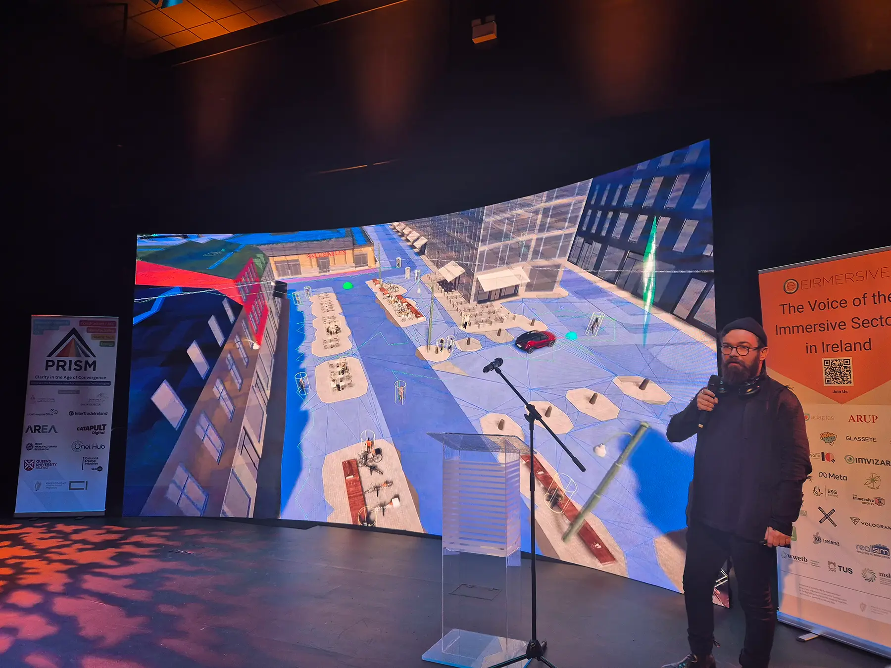
PRISM, Dundalk